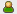

Affichage des entrées et contact de personnes
Plusieurs outils de Novell Teaming (par exemple, les listes de dossiers et les résultats de recherche) affichent un résumé des informations d'entrée. Les informations contenues dans ce résumé permettent d'afficher l'entrée ou de contacter l'auteur de cette dernière, comme décrit dans les sections suivantes.
Affichage des entrées
Pour afficher une entrée, cliquez simplement sur son titre.
Vous pouvez configurer la façon dont Teaming affiche les entrées. Lorsque vous ouvrez une entrée, Teaming peut l'afficher en superposition, dans une nouvelle page, ou dans une fenêtre contextuelle.
Pour changer la façon dont les entrées sont affichées dans Teaming :
-
Dans la barre latérale principale, dans la section , cliquez sur .
-
Sélectionnez le mode désiré pour afficher les entrées.
Contact de personnes
Le résumé de l'entrée comprend une icône , située à côté du nom de l'auteur. Cette icône peut avoir les états suivants :



-
Vert : la personne est en ligne et active.
-
Jaune : la personne a été active récemment, mais est maintenant absente.
-
Gris : la personne n'est pas loguée au client Novell Conferencing.
-
Blanc : l'état de la personne est inconnu.
Cliquez sur l'icône et sélectionnez une option de menu pour contacter la personne. Vous pouvez commencer une réunion instantanée ou planifier une réunion avec la personne, appeler cette dernière, l'ajouter à votre Presse-papiers ou encore afficher son micro-blogue.